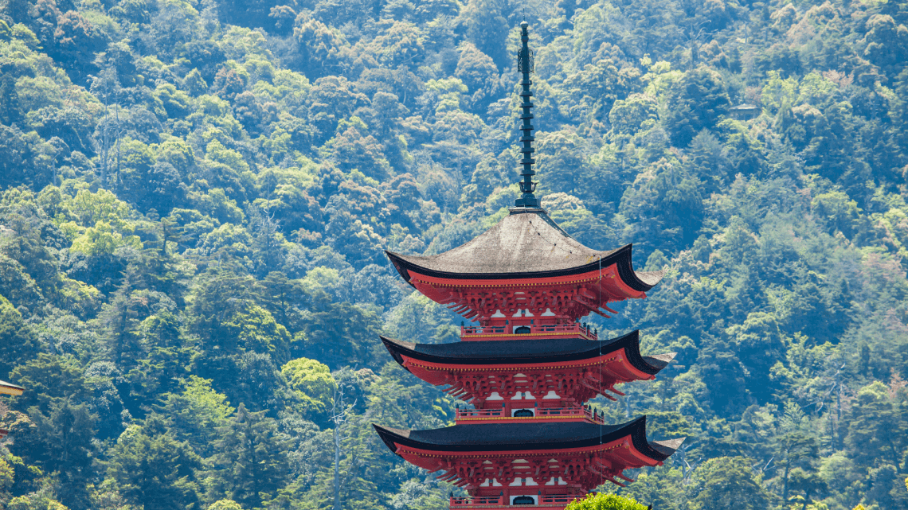
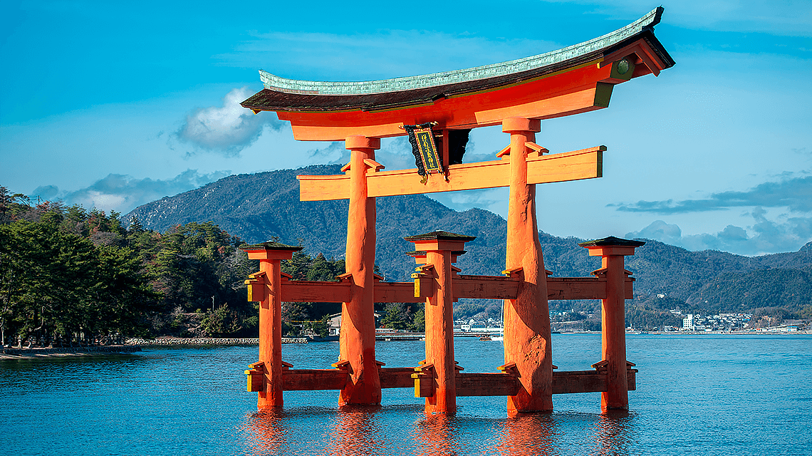
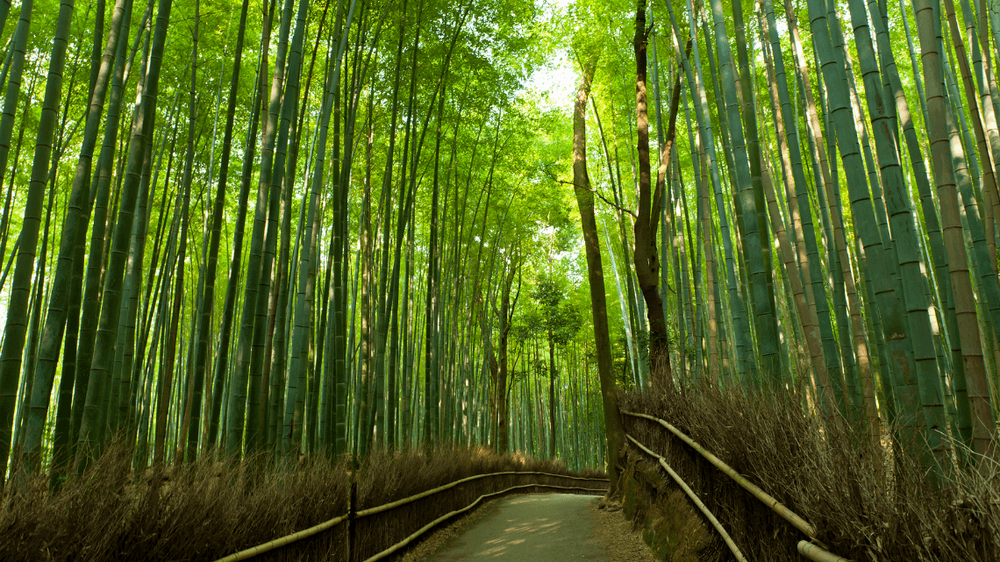
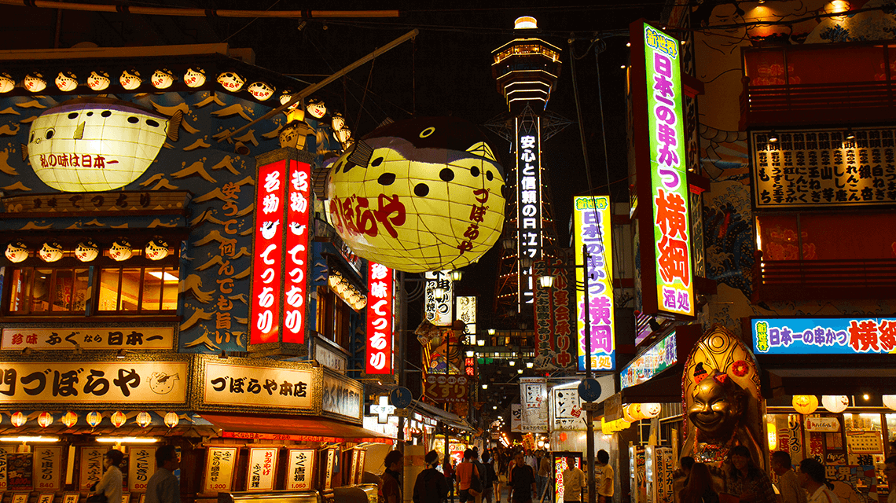

Were I able to travel anywhere else in the world, I would Visit Japan.
I've always admired the architecture of the old temples and shrines, including the striking colours and intricate design.
If, like me, you were most interested in the scenic historical buildings and nature, I would choose Miyajima Island in Hiroshima as my first destination.
On Miyajima Island is the five-storied Pagoda, Gonjunoto, the colours beautifully contrasting the hills behind, as well as the sharp detail of the pagoda behind a soft green backdrop of flora.

From the Pagoda you can also see the well known Itsukushima shrine which, located far out in the water, appears to be floating.
I've seen it on numerous postcards and simply had to find out more, leading me to discover this amazing destination in Hiroshima.

If one wanted to fully immerse themselves in the nature however, I think the Bamboo forest in the Arashiyama district in Kyoto would be an amazing experience.
One could take a walk through this lush green and then spend the rest of the day visiting Kyoto's old shops and restaurants, or continue to explore its nature walks and gardens.

Finally, I would enjoy the food and nightlife of Osaka, quite close to Kyoto in fact.
Being open until late into the night, the streets are still crowded with people, alight with colour, shapes, music and the delicious aroma of its cuisine.

I plan to travel there with friends these summer holidays. The language is quite easy to learn with logical structures and consistency in spelling and pronounciation, far easier than english.
The writing system, where I mean the symbols (katakana, kanji and hiragana) is a minor hurdle and learning extensive kanji is not nessesary if you intend to simply be a tourist in japan.
Happy travels!